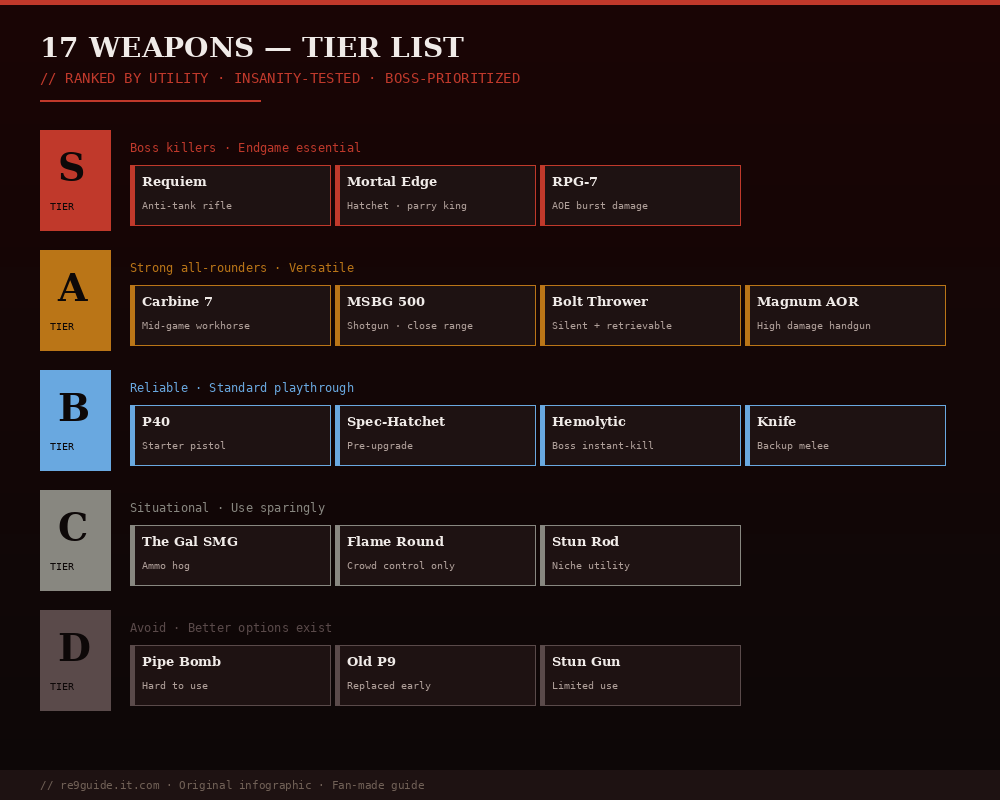

Best Weapons Tier List in Resident Evil Requiem (RE9)
PUBLISHED MAY 2026 · 11 MIN READ · ALL 17 WEAPONS RANKED
✓ SPOILER LEVEL: LOW
Every weapon in Resident Evil Requiem ranked S to D tier based on damage, ammo availability, upgrade ceiling, and effectiveness on Insanity difficulty. Use this tier list to prioritize which weapons to upgrade and which to leave behind.

Fig 1. Complete weapon tier list ranking all 17 RE9 weapons by combat utility, boss effectiveness, and Insanity viability.
Ammo availability — how easily you can keep firing
Upgrade ceiling — max stats with Tier 3 Advanced Tuning
Boss effectiveness — performance against Super Tyrant, Plant 43, Victor Gideon
Insanity viability — does it hold up on the hardest difficulty?
⚡ Note: Grace's weapons cannot be upgraded — they are evaluated on baseline stats only. Leon's weapons can be upgraded at Supply Boxes using Credits, with Tier 3 Advanced Tuning unlocked after collecting all 25 Mr. Raccoon Memoriam.
S Tier — Must-have weapons
S
S Tier
// Game-changing weapons. Always equipped.
Requiem Revolver LEON
The signature weapon of RE9 and the single best gun in the game. One-shot kills standard zombies and deals massive damage to boss weak points. Reserved for the final boss canon ending. Lost briefly during the Care Center sequence and regained in East Raccoon City.
Best for: Boss fights, weak point destruction · Where: Story automatic
MSBG 500 Shotgun LEON
Leon's primary heavy weapon and the workhorse of every boss fight. Devastating close-range damage, generous ammo drops, and excellent upgrade ceiling. Pick this up immediately in the Care Center Attic during the second Chunk fight.
Best for: Bosses, hordes · Where: Care Center Attic (near second Chunk)
Mortal Edge Hatchet BOTH
The upgraded Hatchet from defeating The Commander in the ARK. Significantly faster swings, larger parry window, and increased finisher damage. Mandatory for Insanity runs — the default Hatchet's parry timing is too tight on Insanity.
Best for: Parries, finishers · Where: Defeat The Commander (ARK)
990-TAC Semi-Auto Shotgun LEON
Semi-automatic shotgun with 8-round capacity and excellent shot grouping. Accepts dot sight attachment. Outclasses both the W870 and MSBG 500 once fully upgraded. Costs 5,500 CP at Central Camp Supply Box — worth every coin.
Best for: Sustained boss DPS · Where: Central Camp Supply Box (5,500 CP)
A Tier — Strong all-rounders
A
A Tier
// Reliable, versatile, well worth upgrading.
Silencer 9 Pistol LEON
Built-in suppressor allows stealth kills on standard enemies — invaluable for ammo-conservation runs. High accuracy and decent damage. Outclasses every other handgun in Leon's arsenal.
Best for: Stealth, ammo conservation · Where: East Raccoon City Supply Box
Marksman 1A Sniper Rifle LEON
Bolt-action precision rifle with exceptional damage per shot. Essential for the long-distance Mr. Raccoon shots in Raccoon City. Single-shot capacity is a downside but headshots one-shot most enemies.
Best for: Precision boss damage, distant collectibles · Where: BSAA Container 03 (East Raccoon City)
Matilda IMP LEON
Three-round burst handgun, spiritual successor to RE2's Matilda. Highest DPS handgun in the game. Burns through ammo fast but is excellent for staggering enemies and boss weak points. Unlocks post-story.
Best for: Sustained DPS, staggers · Where: Special Content Store (500 CP, post-story)
Clatter Carbine LEON
The only Assault Rifle in Resident Evil Requiem. High fire rate and damage output for sustained combat. Insanity-tier weapon when fully upgraded — handles hordes and bosses equally well.
Best for: Insanity runs, hordes · Where: Special Content Store (6,000 CP, post-story)
W870 Police Shotgun LEON
Higher ammo capacity than MSBG 500. Faster pump-action but slightly less damage per shot. Excellent backup shotgun for the Raccoon City and ARK sections. Found at Gun Shop Kendo.
Best for: Mid-game shotgun upgrade · Where: Gun Shop Kendo
B Tier — Situational picks
B
B Tier
// Solid in specific scenarios, not always equipped.
Blacktail GRACE
Grace's mid-game handgun upgrade. Reliable damage and accuracy at mid-range. Best handgun option for Grace, but limited by no upgrades.
Best for: Grace's secondary · Where: East Wing 2F
The Gal SMG LEON
Hidden SMG in the flooded Underground Parking Garage. High fire rate with solid mid-game stats. Worth picking up but eventually outclassed by the Clatter Carbine.
Best for: Mid-game horde control · Where: Underground Parking Garage NW (battery area)
Bell Tower Sniper LEON
A high-damage hidden revolver inside the Raccoon City Bell Tower. Powerful but hard to find — easy to miss during the chaotic Bell Tower sequence.
Best for: Hidden powerhouse · Where: Raccoon City Central Bell Tower
Stiri REVO3 A1 SMG BOTH
Lightweight SMG available to both characters. High fire rate but low damage per shot. Stock attachment significantly improves accuracy. Decent stop-gap weapon.
Best for: Early SMG option · Where: East Raccoon City Supply Box
Redemption Rifle LEON
Revolver-style rifle that uses Rifle Ammo. Unique hybrid feel but generally outclassed by both the Marksman 1A and Clatter Carbine. Good for thematic playthroughs.
Best for: Niche builds · Where: Special Content Store (3,500 CP, post-story)
C Tier — Niche use
C
C Tier
// Underwhelming. Replace ASAP.
S&S M232 Pistol GRACE
Grace's starter handgun. Decent for early Care Center but quickly outclassed by Blacktail. Useful only because Grace has no other options early.
Best for: Grace's first hour · Where: Near Bar & Lounge safe
Ghost Grudge LEON
Special unlock weapon with unique mechanics. Cheap at 1,000 CP but stats are mediocre. Worth buying for collection completion only.
Best for: Collection · Where: Special Content Store (1,000 CP)
D Tier — Skip or sell
D
D Tier
// Trash tier. Don't waste resources.
Default Hatchet BOTH
Replaced immediately by Mortal Edge Hatchet. Parry window is too tight for Insanity. Only useful in the early game before The Commander fight.
Best for: Until you get Mortal Edge · Where: Starting equipment
Rocket Launcher (consumable) BOTH
Limited single-use weapon. Save for boss finishers or emergencies — wasting it on regular enemies is a costly mistake. Not the same as the unlockable Infinite RPG.
Best for: Emergency boss kills · Where: Limited drops in Raccoon City
Silencer 9 (Tier 1) — accuracy upgrade for stealth headshots.
💡 Tier 3 Advanced Tuning unlock: Find all 25 Mr. Raccoon Memoriam to unlock the highest weapon upgrade tier. Without this, you cannot fully upgrade any weapon. Required for the "Fully Loaded" trophy.